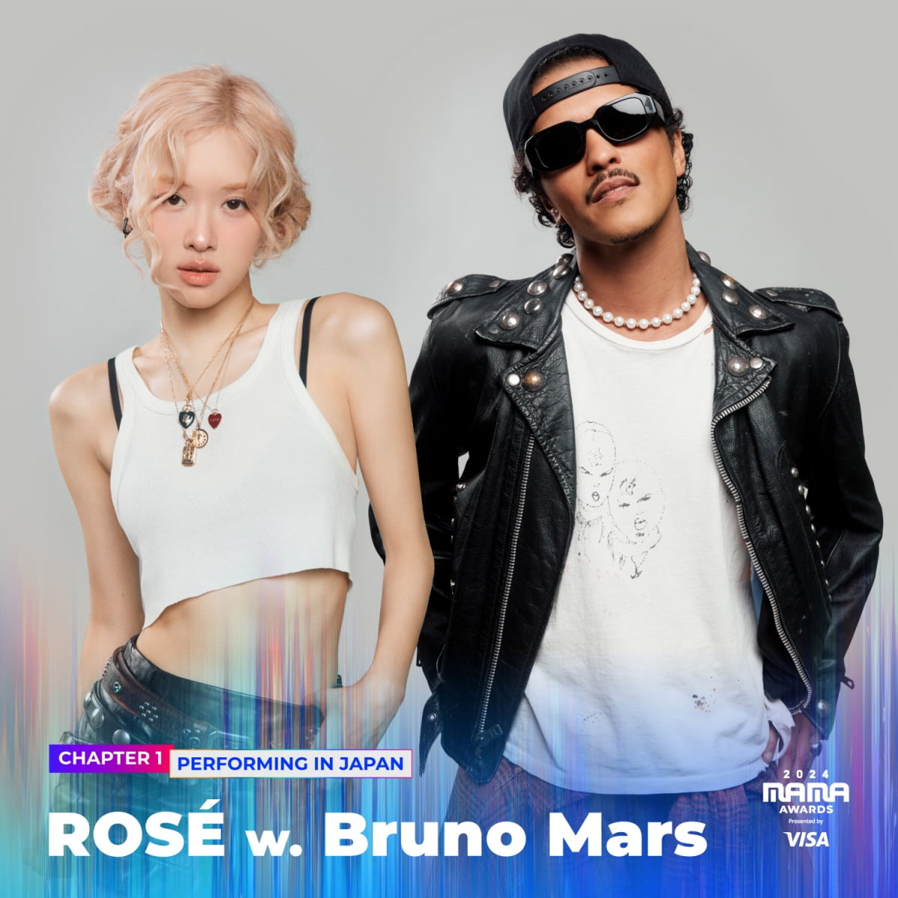

안녕하세요 라보엠입니다.
2024년 11월 22일, 일본 오사카 교세라돔에서 열린 2024 MAMA 어워즈는 블랙핑크 로제와 팝스타 브루노 마스의 특별한 협업 무대로 큰 화제를 모았습니다. 두 사람은 글로벌 센세이션상을 수상하며 함께 무대에 올라 곡 APT. 아파트를 선보였는데, 이 무대는 기대와 아쉬움이 공존한 순간으로 평가되고 있습니다.
두 아티스트는 '글로벌 센세이션' 부문을 수상하며 함께 무대에 올랐습니다. 특히 인상적이었던 것은 두 사람이 트로피를 들고 건배하듯 맞대는 모습이었죠. 또한, 두 사람은 수상 소감에서도 유쾌한 모습을 보여주었습니다. 트로피를 건배하듯 맞대며 로제는 "제가 가장 좋아하는 술 게임으로 곡을 쓰게 됐다"며 감사 인사를 전했고, 브루노 마스는 한국어로 "감사합니다"라고 짧게 말해 현장의 분위기를 훈훈하게 만들었습니다.
로제 x 브루노 마스 아파트 무대 공개
로제와 브루노 마스는 APT. 아파트라는 곡으로 글로벌적인 성공을 거두며 빌보드 핫 100 차트 8위에 오르는 성과를 냈습니다. 이 곡은 한국의 술 게임에서 영감을 받아 만들어진 것으로, 중독성 있는 멜로디와 쉬운 가사가 특징입니다. 두 사람은 시상식에서 이 곡을 처음으로 선보이며 관객들의 뜨거운 환호를 받았습니다. 로제의 맑고 강렬한 보컬과 브루노 마스의 소울풀한 에너지가 어우러져 무대를 더욱 빛냈다는 평가를 받았습니다.
많은 팬들이 기대했던 APT '아파트' 무대는 3부 말미에 공개되었는데, 아쉽게도 현장 라이브가 아닌 사전녹화 영상이었습니다. 작은 라이브홀에서 진행된 무대였지만, 두 아티스트는 정장 자켓을 입고 등장해 파워풀한 가창력을 선보였습니다.
로제와 브루노 마스의 특별한 모습
브루노 마스는 시상식 시작부터 남다른 존재감을 보여주었습니다. 에스파의 팬스초이스 수상 때 다른 아티스트들과 함께 일어나 박수를 치는 모습이 포착되어 화제가 되기도 했습니다. 이번 '아파트' 협업은 빌보드 메인 싱글 차트 'HOT 100' 8위에 진입하는 등 놀라운 성과를 거두었습니다. 로제는 12월 6일 발매 예정인 첫 정규 앨범 'rosie'에 이 곡을 포함해 총 12곡을 수록할 예정이며, 전곡 작사·작곡에 참여했다고 합니다. 사전녹화 무대 공개에 대해 팬들은 아쉬움을 표현했지만, 무대 자체의 완성도는 높았다는 평가를 받았습니다. 특히 두 아티스트의 환상적인 케미스트리와 뛰어난 무대 매너는 많은 호평을 받았습니다.

맺음말
2024 MAMA 어워즈에서 로제와 브루노 마스의 APT. 아파트 무대는 분명히 시상식의 하이라이트 중 하나였습니다. 두 글로벌 아티스트의 협업은 음악적 경계를 허물고 팬들에게 특별한 순간을 선사했지만, 사전 녹화 논란과 팬들의 기대치 관리 부족은 아쉬움을 남겼습니다. 그럼에도 불구하고, 이들의 공연은 K팝과 글로벌 팝 음악이 만나는 새로운 지평을 열었다는 점에서 의미가 깊습니다. 12월에 발매될 로제의 새앨범도 기대해보겠습니다.
관련 포스팅
로제 아파트 ROSE & Bruno Mars 브루노 마스 APT 아파트 아파트 노래 뮤비 가사
안녕하세요 티스토리 음악 분야 크리에이터 한스입니다.발매 일주일도 안되어 유튜브 1억뷰를 달성한 노래가 있습니다. 로제 ROSÉ & Bruno Mars 의 노래 APT 아파트인데요, 전 세계 음악 팬들의 마
umm.la-bohe.me